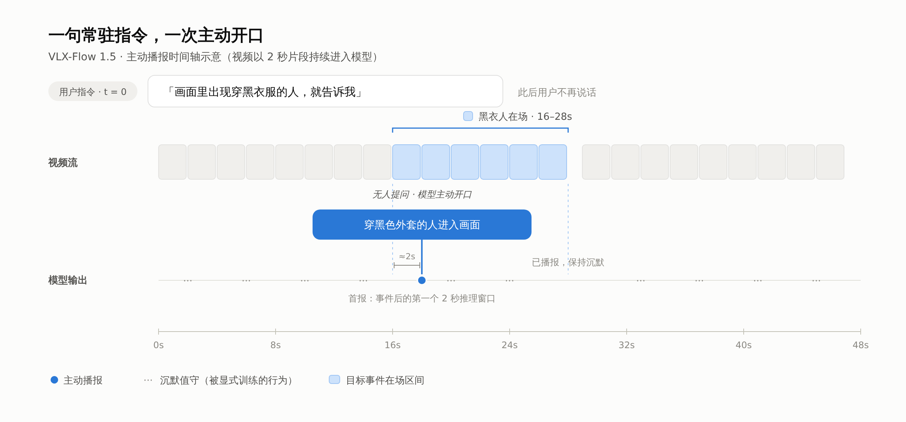

亮点
- 🌊 流式持续理解：视频以连续片段持续输入，双层记忆增量更新，Linear Attention 的可递推状态保留历史信息——无需重看历史视频，长时间运行下，首 token 延迟与显存占用保持平稳。
- 💬 更强的主动响应：一句自然语言常驻指令，模型持续观察、保持静默，目标事件出现后第一时间主动响应；静默与响应时机的配合更稳定，重复输出更少。
- 🎬 更连贯的持续描述：跨片段语义衔接让长时描述不断裂、不复读，更能紧跟画面变化，可为具身应用提供连贯的环境语义。
- 🔍 更少的交互幻觉：回答与主动响应均以画面证据为依据，信息不足时合理拒答，减少无依据的推测与事件误触发，让端侧持续交互更可信。
- 🚀 更高的推理效率：增量更新与缓存状态复用免去历史视频的重复计算，静默控制减少冗余输出 token 与解码开销，更适合对时延和算力敏感的端侧部署。
摘要
VLX-Flow 是面向实时视频的端侧流式多模态模型，可在端侧设备上提供持续在线的视频理解能力。模型以连续视频输入、增量状态更新与持续记忆为核心，将不断到来的视频画面转化为可复用的语义上下文。在这套流式架构下，模型能够持续描述视频内容，结合已有观察响应实时提问，并根据自然语言指令主动响应关注的事件，让视频理解贯穿交互发生前后的完整过程。
在上一代 Flow 模型的基础上，VLX-Flow 1.5 在主动响应、持续描述与实时问答方面进行了增强：主动响应围绕事件触发与静默控制进行优化，行为更节制、重复输出更少；持续描述更连贯、更及时；实时问答更注重视觉依据，信息不足时合理拒答。更节制的输出与更低的生成开销，让这三项能力在端侧设备的长时间运行中配合得更自然、也更可信。
1. VLX-Flow：以流式架构支撑持续视频理解
摄像头持续采集，机器人不断移动，屏幕内容实时变化。面向这些输入，流式视频理解需要在画面到达时就开始，并在用户提问或目标事件出现时，及时调用此前积累的信息。流式视频理解的核心，是将随时间到达的视频信息，持续转化为可更新、可复用的模型状态。输入、记忆与交互由此建立连续的时间联系，模型在每次响应时都能够接续已有的观察上下文。
围绕这一目标，上一代 Flow 模型建立了增量视觉编码与状态递推相结合的流式推理架构：视频以连续片段按时间顺序进入模型，视觉编码器提取当前片段特征，语言主干结合已有状态完成增量推理，无需重看历史视频。双层记忆机制持续维护观察结果——视觉缓存保留近期画面细节，语义记忆沉淀交互历史；语言主干中的 Linear Attention（线性注意力）模块以可递推状态聚合历史信息，让持续运行中的响应延迟与显存占用保持可控。
在这套流式上下文上，主动响应、持续描述与实时问答构成三种相互衔接的交互方式：持续描述随视频推进表达场景变化，实时问答结合已有记忆响应随时到来的提问，主动响应依据用户指令持续观察、在目标事件出现时主动开口。三项能力共同体现了 Flow 的流式特征：观察持续进行，状态增量更新，交互随时发生。VLX-Flow 1.5 延续这一架构基础，进一步提升连续理解的表达质量、实时推理效率和交互行为的可靠性，让流式状态更有效地支撑这三项能力。
2. VLX-Flow 1.5：三个方向的能力增强
2.1 主动响应：从被动回答到主动开口
传统主流视频模型是被动接口：一次输入、一次回答，问什么答什么。要用它“盯”住一件事，只能靠应用层轮询——每隔几秒截一段视频，重复问一遍“画面里出现目标了吗”。这套变通的代价不小：每一轮都是一次独立调用，频率低了会漏掉事件，频率高了则把算力浪费在大量“还没有”的回答上；而去重、节流、事件边界这些状态管理，轮询本身并不提供——都得应用层自己维护，稍有不慎，同一事件就会被反复报告。“盯”这件事，实际上被外包给了外部的调度逻辑。
对端侧设备，这套变通尤其不合适：算力与功耗本来就受限，轮询的重复推理是纯开销；而值守类应用真正需要的是“平时低开销、关键时刻及时响应”。主动响应把“盯”收回模型自身：用户用一句自然语言常驻指令设定关注的目标事件，此后模型持续观察视频流，在事件出现时主动开口，无需反复询问。视频应用的形态随之改变——摄像头从被动记录变为按任务值守，机器人能够把环境中值得注意的变化主动上报；设备负责持续观察，人只需在被提醒时处理真正需要处理的事。
这项能力的难点在“时机”。上一代 Flow 模型已经具备事件触发式交互的基础，但触发的稳定性与输出的节制仍有提升空间：相似画面被误判为目标、同一事件被反复输出。同类型的其他流式视频模型的问题则更根本：有的持续输出难以安静，有的把常驻指令当作一次性提问、在证据出现之前就抢着作答，还有一些则需要用户不断下发指令，才能维持流式监控。对值守任务来说，早报、误报与漏报都会让主动响应失去价值——时机不对，回复的内容再流畅也不可信。
VLX-Flow 1.5 围绕指令条件下的事件判断与时序响应策略进行优化，加强视觉证据、指令条件与响应时机之间的对应：模型综合指令要求、当前视觉证据与已有回复记录，判断此刻应继续观察、主动响应，还是在一次回复之后恢复静默、等待下一次符合条件的事件。事件识别与输出时机的配合更稳定，重复输出更少，输出更集中于用户关注的信息，主动行为与持续视频流的节奏更加协调。
例如，用户向办公室摄像头输入“画面里出现穿黑色外套的人就告诉我”，然后离开座位。接下来的人来人往与光线变化中，模型保持静默观察；目标出现的那一刻，没有人提问，模型主动响应，随后恢复静默。

常驻指令下达后，模型持续观察；目标事件出现后，及时主动响应，然后恢复静默，等待后续符合条件的事件。
支撑这些改善的一个重要训练方向，是面向连续交互的流式行为监督。在已有的流式监督微调体系上，VLX-Flow 1.5 将响应内容与逐轮交互状态对齐，显式监督当前是否满足指令条件、是否已回复过、是否应继续观察。静默判断的准确性与主动响应的及时性，同样是模型训练时的重要监督指标：在无需回复时保持静默状态，是模型正确执行任务的一部分；需要响应时的及时回复，则保证主动能力不会因减少输出而失去有效性。
在行为监督之上，主动响应还需要一种更贴近任务本身的优化方式：“何时开口”是逐轮的序列决策，很难为每种画面与指令的组合预先标注标准答案。为此，配套的后训练体系基于 VLM-R1 的多模态强化学习范式，构建了面向连续视频的流式强化学习（Streaming RL）流程：模型在完整流式回合中按时间顺序逐轮生成，并将已生成的交互历史带入后续决策，由奖励信号评价整段行为，而不是孤立地评价每一次输出。奖励设计覆盖主动行为的三个要素：语义质量评估考察回复内容是否与画面一致；事件时序奖励对齐触发时刻——事件出现前抢答受到抑制，事件窗口内的及时回复获得强化，已报告后的重复输出被明确惩罚，合理等待与错过事件也被区分对待；轨迹对比：同一条视频流的多种响应轨迹相互比较，进一步降低对绝对评分的依赖。由此，优化目标从“答得对”延伸到“在正确的时刻说正确的话”，为主动响应与静默控制提供定向强化，进一步增强了主动响应模式下的指令遵循能力以及事件触发的响应及时性。
2.2 持续描述：增强时序连贯性，提升实时响应
持续描述是流式理解的基础能力：模型随着视频推进，接续讲述场景、主体、动作与事件的变化。它既是用户直接感知的输出，也是语义上下文记忆的来源之一。在端侧具身场景中，持续描述可以有效提供持续更新的环境语义：具身智能设备据此理解环境变化，屏幕助手与摄像头应用据此提供连续讲解。
长时描述的难点，在于“连贯”与“不重复”。上一代 Flow 模型已经支持随视频推进的连续表达，但在更长的视频流中，片段之间仍会出现叙述割裂与重复表述；同类流式模型的这一问题更加明显，常见的失败形态要么是同一段内容反复复读，要么是输出碎成不成句的词语流。对需要长时间稳定运行的端侧设备来说，割裂的描述让语义历史难以引用，重复的输出则带来无意义的生成开销——这也是持续描述必须继续提升的原因。
VLX-Flow 1.5 通过强化跨片段语义衔接、辅以时间递推的记忆监督，增强了这一点：模型结合此前的场景状态描述当前变化，让“谁在继续做什么”“物体位置如何变化”“此前的事件是否还在发展”这条时间线在长视频流中不断裂、不复读。例如，一个人拿起杯子、走向桌边再放下杯子，这条动作链路在流式上下文中保持关联，用户随后追问“刚才他把什么放在桌上”，模型可以直接作答。更连贯、更及时的持续描述，让长时讲解、第一视角观察和屏幕内容理解更接近一位紧盯画面的实时解说，也为端侧设备提供了可靠的环境语义基础。
2.3 实时问答：强化视觉依据，减少无依据回答
实时问答让用户在观看过程中随时提问，模型基于已经看到的画面直接作答，无需回头重看录像。看视频时，用户可以随时确认画面细节；值守巡检时，问题往往在事件发生后才被提出——无论哪一种，回答都只能建立在已经观察到的内容上。也正因为如此，回答必须有依据：一个缺乏依据的回答，可能直接影响用户对现场情况的判断。
难点在于，用户的问题并不保证在已观察的画面中有依据，被问到的事物可能根本没有出现在视频内容里。模型必须依据已有观察作答，也就必须准确区分“看到了什么”与“没有看到什么”。上一代 Flow 模型在多数情况下能够依据观察作答，但面对画面中不存在的事物，仍可能给出一个“看起来合理”的答案，而不是承认没有看到；同类流式模型在持续输出的压力下，无依据的描述与抢答更为常见。对端侧与具身应用来说，这类“自信的编造”比坦率的“没看见”危害更大——它会把错误判断传递给后续的决策。
VLX-Flow 1.5 强化问答的视觉依据约束，让模型更注重区分已观察到的事实与尚无充分依据的信息。例如，用户对一段街景提问“刚才那艘船往哪边开？”，如果已观察的画面中没有出现船，模型会指出“在已观察的画面中没有看到船”；对无法确认的内容，也会适当说明不确定性。通过更好地划分何时作答、何时拒答，模型在保留正常问答能力的同时，减少缺乏视觉依据的推测——校准的是“有没有依据”，而不是“少说话”。
3. 评测表现：公开基准对照
我们在三条公开的流式视频基准上检验 VLX-Flow 1.5：StreamingBench 考察模型对实时到达画面的理解，其 Real-Time Visual 任务部分覆盖物体识别、因果推理、计数等十类任务；OVO-Bench 从回溯（回忆已看到的画面）、实时（理解正在发生的画面）、前看（指令给定后等待目标在后续画面中出现、证据充分后及时作答）三个时间视角考察在线视频理解；TraceBench 专门考察流式交互行为，覆盖实时问答与常驻指令下的主动响应，同时记录延迟、token 消耗、完成率等性能指标。以下对照模型的分数汇总自各基准的官方榜单与论文。其中 StreamingBench 和 OVO-Bench 采用和官方对齐的流式方式测评，对齐测评中，VLX-Flow 1.5 的问答模式为每道题平均查看 64 帧。
表 1. StreamingBench Real-Time Visual：整体与逐任务。任务列：OP=物体识别、CR=因果推理、CS=片段总结、ATP=属性识别、EU=事件理解、TR=画面文字理解、PR=前瞻推理、SU=空间理解、ACP=动作识别、CT=计数。
| Model | Overall | OP | CR | CS | ATP | EU | TR | PR | SU | ACP | CT |
|---|---|---|---|---|---|---|---|---|---|---|---|
| VLX-Flow 1.5 | 85.00 | 91.83 | 86.72 | 92.11 | 91.18 | 85.71 | 94.70 | 83.33 | 76.83 | 82.44 | 48.70 |
| AURA | 83.20 | 87.5 | 84.4 | 93.4 | 89.5 | 83.2 | 87.9 | 86.1 | 76.4 | 82.4 | 47.7 |
| MOSS-VL-Realtime | 82.90 | 86.6 | 81.8 | 87.9 | 87.5 | 84.7 | 82.4 | 83.3 | 75.3 | 80.6 | 52.1 |
| MiniCPM-o 2.6 | 79.88 | 85.01 | 85.94 | 89.91 | 85.95 | 80.12 | 86.60 | 76.85 | 74.80 | 74.79 | 46.11 |
| MiniCPM-o 4.5 | 78.20 | 80.9 | 88.3 | 82.0 | 85.0 | 78.9 | 85.4 | 78.7 | 67.1 | 75.6 | 56.0 |
| Gemini 1.5 Pro | 77.39 | 83.43 | 77.94 | 89.24 | 81.65 | 79.17 | 83.92 | 83.93 | 60.32 | 74.87 | 49.22 |
| InternLM-XC2.5-OL | 75.36 | 84.74 | 79.69 | 83.91 | 87.91 | 75.78 | 80.06 | 67.59 | 65.85 | 70.25 | 38.34 |
| GPT-4o | 74.54 | 80.66 | 76.98 | 86.67 | 73.81 | 75.95 | 85.48 | 75.00 | 70.66 | 65.99 | 43.09 |
| StreamAgent | 74.30 | 79.6 | 78.3 | 79.3 | 75.9 | 74.7 | 76.9 | 82.9 | 66.3 | 73.7 | 55.4 |
| LLaVA-OneVision-7B | 74.27 | 82.83 | 77.34 | 83.23 | 83.33 | 72.05 | 74.77 | 73.15 | 68.29 | 71.10 | 41.97 |
| Qwen3-VL-8B-Inst | 74.10 | 80.1 | 76.6 | 81.1 | 81.1 | 77.0 | 73.2 | 80.6 | 63.4 | 68.8 | 57.0 |
| Claude 3.5 Sonnet | 74.04 | 82.45 | 73.77 | 82.43 | 82.40 | 76.39 | 85.56 | 61.68 | 60.73 | 67.88 | 47.62 |
| MiniCPM-V 2.6 | 72.43 | 78.20 | 71.88 | 84.18 | 83.99 | 75.16 | 75.39 | 72.22 | 56.50 | 67.14 | 47.15 |
| Qwen2-VL-7B | 71.15 | 75.75 | 79.69 | 76.58 | 79.08 | 74.53 | 75.08 | 74.07 | 65.85 | 65.16 | 41.97 |
| VITA-1.5 | 70.88 | 77.66 | 82.81 | 82.33 | 79.34 | 72.67 | 71.34 | 67.59 | 62.20 | 69.12 | 32.12 |
| ViSpeak | 70.40 | 79.8 | 71.1 | 81.4 | 78.8 | 74.5 | 70.1 | 63.9 | 64.2 | 71.4 | 28.0 |
| InternVL2-8B | 70.11 | 73.84 | 65.63 | 78.80 | 82.03 | 71.43 | 72.90 | 73.15 | 63.01 | 65.44 | 42.49 |
| LLaVA-NeXT-Video-32B | 69.83 | 80.11 | 71.09 | 80.70 | 80.72 | 71.43 | 73.21 | 62.96 | 59.35 | 63.17 | 36.79 |
| Kangaroo | 65.76 | 77.57 | 74.22 | 75.70 | 74.38 | 70.91 | 62.86 | 52.63 | 50.54 | 63.97 | 33.16 |
| LongVA | 63.11 | 73.02 | 66.41 | 66.46 | 74.84 | 65.22 | 62.93 | 60.19 | 56.91 | 56.66 | 37.82 |
| VILA-1.5 | 61.54 | 71.12 | 57.81 | 74.68 | 72.22 | 70.81 | 62.62 | 51.85 | 51.22 | 60.34 | 18.65 |
| Video-CCAM-14B | 53.42 | 54.50 | 63.28 | 73.73 | 63.73 | 57.76 | 47.35 | 50.93 | 41.87 | 48.44 | 26.94 |
| VideoLLaMA 2 | 52.58 | 59.95 | 60.16 | 62.97 | 60.46 | 54.66 | 46.11 | 41.67 | 46.75 | 48.16 | 34.72 |
在该榜单中，VLX-Flow 1.5 得到 85.00，比 AURA（83.20）与 MOSS-VL-Realtime（82.90）分别高出约 1.8 与 2.1 个百分点，比 MiniCPM-o 2.6（79.88）高约 5.1 个百分点。逐任务上，VLX-Flow 1.5 在 OP 物体识别、ATP 属性识别、EU 事件理解、TR 画面文字理解等任务上表现最好，ACP 动作识别、CR 因果推理、CS 片段总结、SU 空间理解同样位居前列；相对弱项为 CT 计数，可能与流式推理方式有关，后续会持续优化。
表 2. OVO-Bench（%）：三组与 Overall。BT=回溯、RTVP=实时、FAR=前看，All 为三组宏平均。
| Model | BT | RTVP | FAR | All |
|---|---|---|---|---|
| VLX-Flow 1.5 | 78.39 | 79.54 | 53.60 | 70.51 |
| MOSS-VL-Realtime | 72.60 | 75.90 | 62.10 | 70.20 |
| AURA | 60.40 | 79.80 | 55.80 | 65.30 |
| Gemini 1.5 Pro | 62.54 | 69.32 | 57.15 | 63.00 |
| MiniCPM-o 4.5 | 55.90 | 67.30 | 55.90 | 59.70 |
| GPT-4o | 60.75 | 64.46 | 53.40 | 59.54 |
| ViSpeak | 57.50 | 66.30 | 54.20 | 59.30 |
| Streamo-7B | 49.20 | 67.40 | 57.00 | 57.90 |
| Qwen2-VL-72B | 56.95 | 61.92 | 49.30 | 56.27 |
| GPT-4.1 | 56.85 | 60.15 | 47.53 | 54.85 |
| LLaVA-Video-7B | 40.40 | 63.52 | 54.82 | 52.91 |
| LLaVA-OneVision-7B | 43.71 | 64.02 | 50.50 | 52.74 |
| Gemini 1.5 Flash | 57.98 | 57.20 | 42.86 | 52.68 |
| Qwen2-VL-7B | 46.46 | 55.98 | 48.74 | 50.39 |
| InternVL-V2-8B | 43.44 | 60.39 | 46.60 | 50.15 |
| StreamAgent | 41.70 | 61.30 | 45.40 | 49.40 |
| Qwen3-VL-8B-Inst. | 41.00 | 61.60 | 37.70 | 46.80 |
| LongVU-7B | 35.01 | 57.61 | 47.50 | 46.71 |
| Dispider-7B | 36.06 | 54.55 | 34.72 | 41.78 |
| Llama-3.2-11B-VL-Instruct | 41.07 | 49.79 | 33.55 | 41.47 |
| Stream-LLM-v1.5-7B | 35.38 | 38.05 | 29.68 | 34.37 |
| Flash-VStream-7B | 27.38 | 28.37 | 45.09 | 33.61 |
| VideoLLM-Online-8B | 17.73 | 20.79 | — | — |
| Human | 92.33 | 93.20 | 92.90 | 92.81 |
在三组宏平均（Overall）上，VLX-Flow 1.5 为 70.51，高于 AURA 的 65.30 约 5.2 分、Gemini 1.5 Pro 的 63.00 约 7.5 分，与 MOSS-VL-Realtime 的 70.20 表现相近。分组看：回溯（BT）78.39 为所列模型中最高，次高为 MOSS-VL-Realtime 的 72.60；实时（RTVP）79.54 与 AURA 的 79.80 表现相近；前看（FAR）53.60 与 GPT-4o 持平，相比其他流式视频模型仍偏低，是三组中相对最弱的一组，也是下一阶段的明确目标。
表 3. TraceBench v1.1。
| Model | QA Accuracy ↑ (%) | QA Completion ↑ (%) | Response Latency ↓ (ms) | In-window Accuracy ↑ (%) | Median Response Delay ↓ (s) | False-alarm Rate ↓ (%) | Miss Rate ↓ (%) | Invalid Output ↓ (%) |
|---|---|---|---|---|---|---|---|---|
| VLX-Flow 1.5 | 76.5 | 100.0 | 560 | 21.1 | 0.34 | 63.9 | 20.3 | 4.1 |
| MOSS-VL | 75.03 | 99.88 | 374.6 | 8.05 | 0.33 | 41.1 | 47.24 | 0.84 |
| AURA | 73.83 | 99.88 | 819.7 | 7.92 | 1.15 | 59.1 | 47.64 | 0.60 |
| LiveCC | 65.19 | 93.88 | 165.2 | 12.98 | 1.08 | 65.0 | 0.31 | 6.12 |
| MOSS-Preview | 65.07 | 100 | 138.1 | 4.45 | 0.20 | 77.7 | 35.67 | 1.92 |
| ThinkStream | 61.46 | 100 | 411 | 0.52 | 2.14 | 73.6 | 68.43 | 0 |
| VideoLLM-Online | 2.64 | 100 | 681.1 | 0.18 | 0.20 | 82.4 | 60.39 | 95.32 |
| MiniCPM-O (native duplex) | 2.40 | 100 | 489.5 | 0.51 | 1.24 | 80.3 | 65.43 | 93.52 |
| JoyAI (Agent System) | 67.47 | 91.36 | 876.1 | 17.08 | 1.12 | 50.5 | 32.13 | 8.52 |
QA 准确率上，VLX-Flow 1.5 为 76.5，高于次名 MOSS-VL（75.03），完成率 100%；QA 响应延迟 560ms，无效输出 4.1%（指未能提取出有效选项的回答占比）。主动响应轨道上，窗口内准确率 21.1 为表内最高，领先次名 JoyAI（Agent System）的 17.08 约 4 个百分点，漏报率 20.3% 为表内次低（仅高于持续输出的 LiveCC 的 0.31，多数对照在 30–68%），误报率 63.9% 在表内偏高，是下一阶段的重点优化项；中位响应延迟 0.34s，与 MOSS-VL（0.33s）相当。
4. 工程价值：更高效的流式推理，更及时的持续交互
流式架构让视频理解得以常驻设备运行——持续地看、持续地记、就近地理解，这一价值在上一代 Flow 模型中已经建立。VLX-Flow 1.5 的工程增量，是让持续运行的每一环更高效：增量更新与按需输出降低了计算与生成开销，持续描述更及时地跟随画面变化，实时问答与主动响应的等待更可控，三项交互能力的节奏真正贴近视频流本身。
更有分量的节省来自“少说”。上一代架构已经提出“按需生成”的原则，1.5 通过行为训练把它变成了模型的自觉：该静默时静默，报过之后不再重复——视频必须持续地看，输出却可以按需地给。对应用而言，这不只是交互体验，更是运行成本：更少的输出意味着更低的生成开销，长时间运行时的负担不再随视频时长无限上涨，应用侧也不必过滤、存储和处理大量无效输出。
这些价值最终落在三项交互能力的具身场景中。机器人可获得持续更新的环境语义，为导航与交互提供环境参考，而不必为每一次判断重新感知画面；摄像头应用按任务值守、主动上报，人无需盯着屏幕，只在被提醒时处理真正需要处理的事件；视频助手与屏幕助手在本地提供连续讲解与随问随答，讲解跟得上内容，提问不必等待。
VLX-Flow 1.5 继续承担 VLX 体系中的 Semantics 层，将连续画面转化为可持续更新、可交互调用的语义上下文。流式架构提供持续理解的基础，更低的运行开销、及时的响应与更可信的输出，让这套能力能够长期运行在真实设备上，也为目标定位、跟踪与具身交互等后续能力提供持续的语义支撑。